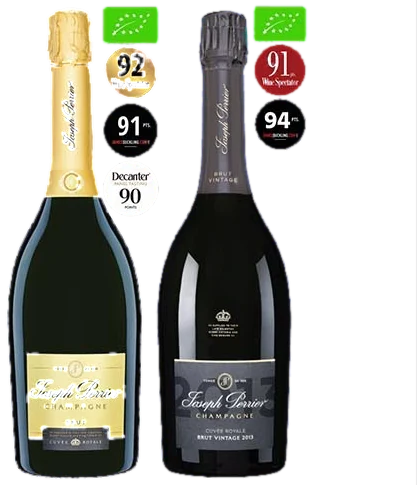
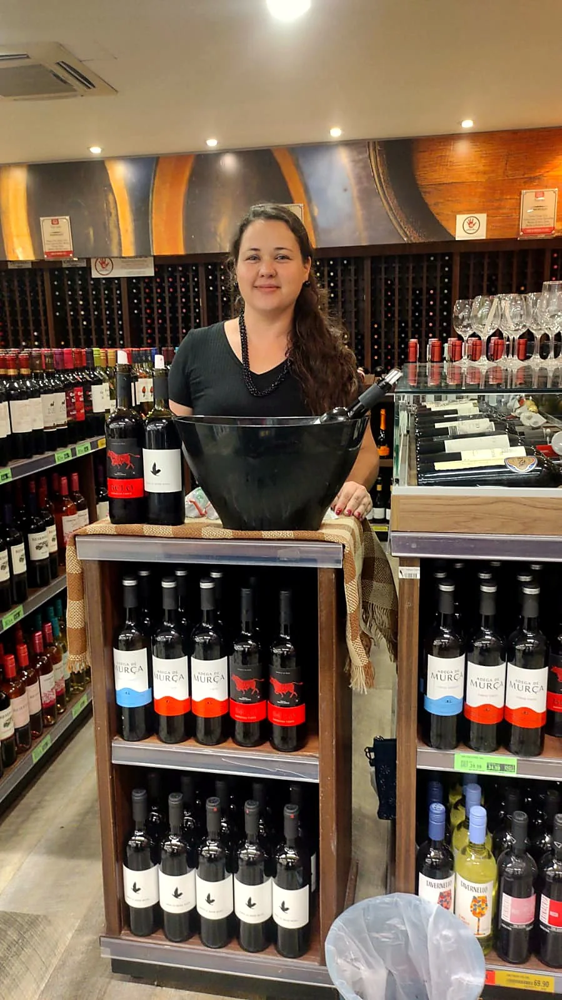

1. No vinhedo
Começa com quem faz o vinho.
Trabalhamos com produtores de sete países: Argentina, Chile, Croácia, Espanha, França, Itália e Portugal. Cada rótulo é escolhido pensando em quem vai bebê-lo no Brasil.

A Ganesh importa, distribui e apresenta vinhos de produtores de sete países. Acompanhe a viagem que cada garrafa faz até chegar à taça.

1. No vinhedo
Trabalhamos com produtores de sete países: Argentina, Chile, Croácia, Espanha, França, Itália e Portugal. Cada rótulo é escolhido pensando em quem vai bebê-lo no Brasil.
2. No oceano
Antes dos vinhos, a Ganesh já fazia a gestão completa de importações para outras empresas. A rota de cada garrafa é planejada pela nossa própria equipe.
3. No porto
Recebemos e liberamos a carga nós mesmos e levamos o vinho direto para armazéns preparados para guardá-lo.
Santos, Itajaí, São Francisco do Sul, Vitória, Guarulhos e Viracopos.
4. Na gôndola
Distribuímos para supermercados, adegas e restaurantes. No Covabra, rede de 25 lojas no interior de São Paulo, o vinho ganha degustação com promotora e espaço de destaque.
5. Na taça
Depois de cada ação, o produtor recebe fotos, números e o que os clientes disseram. O vinho deixa de ser um pedido e passa a ter uma história no Brasil.
Uma seleção do catálogo de novembro, com mais de 150 rótulos.
Domaines históricos, vinícolas familiares e cooperativas de sete países.
Produtores que procuram um parceiro no Brasil e lojas ou restaurantes que querem o nosso portfólio: fale com a nossa equipe.